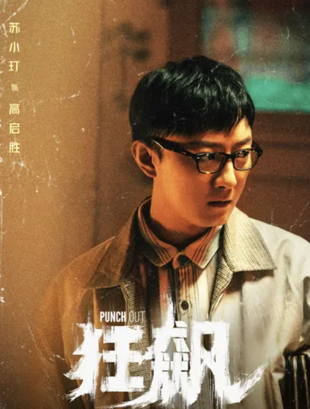

120秒 带你走近一场“狂飙”的盛宴
一场长达20年的斗争，两段近乎“狂飙”的人生。
2000年，意气风发的刑警安欣（张译饰）与倍受欺负的鱼贩子高启强（张颂文饰）相识，就像伯乐遇到了千里马，两个共鸣的灵魂注定相遇。
如果人生可以重来，如果在岔路口选择了另一个方向，安欣和高启强是否就能够成为无话不谈相知相识的好友？
然而，一念之差，两人从此踏上了相反的路途，并独自“狂飙”。
随着高启强逐渐偏离正途，安欣意识到在京海市社会发展的背后正是以高家兄弟为首的黑恶势力暗流汹涌，两人分道扬镳并展开了长达20年的正邪较量。
2021年，在全国开展扫黑除恶常态化的背景下，中央督导组雷霆出击，安欣协同专案组彻查强盛集团犯罪团伙及其背后的保护伞。
京海的未来会是怎样？或者说安欣和高启强这两个本可以成为兄弟却因为选择的不同而沦为敌人的结局又会是怎样？
这场“狂飙”的盛宴等你入席！
京海市“灵魂人物”
京海的20年，对于一个人来说意味着什么？
移动鼠标至图片，查看他/她20年后的结局 👉
安欣
作为人民警察，安欣把守护好百姓安危、一方安宁当做毕生使命。因为孤儿出身的自卑和善良，他在偶然间帮助了被市场恶霸欺辱的高启强，却成为了对方狐假虎威、逐渐沦陷权力深渊的工具。安欣也凭着内心对正义的追求，在黑与白的游走中坚守初心，与黑恶势力斗争到底，逐渐成长为一个真正的好警察。
高启强
原本是一个菜市场卖鱼的小商贩，因为一次打人事件得到安欣的帮助，借助和安欣的关系，狐假虎威满足自己的欲望。在一系列意外事件后被卷进了与黑恶沾边的是非之中，在对“钱”与“权”的追逐中迷失自己、越陷越深，从一个卑微渺小的底层鱼贩变成了当地涉黑组织的头目。
徐江
原白金瀚夜总会的老板，涉黑，还勾结政府官员来做他的保护伞。儿子意外身亡后，他不听泰叔的劝解执意要为儿子报仇，连杀白江波等几个他认为的仇人。在高启强用他犯罪证据的录音笔要挟他时，虽然心里不服但不得不与之为伍。最后被高启强和老默杀害。

高启盛
高启强的弟弟，高材生。劝原本在旧厂街菜市场卖鱼的哥哥一起开起了市里第一家小灵通专卖店，并做的风生水起。在哥哥走上犯罪道路之后，他极力想要加入，利用所学知识给哥哥出谋划策。后来在哥哥完成身份跳跃之后，他更加疯狂，开始卖起了药丸。最终为救哥哥与李响一起坠楼身亡。
陈书婷
从小被京海市的首批黑老大陈泰收养，作为其养女生活长大。嫁给了沙场的老大白江波，并育有一子。大气、精明、有能力也有气场的女强人。在白江波被害后嫁给了高启强，并将高启强推荐给陈泰做干儿子，扶持着高启强一步一步把陈泰的建工集团拿下，后又成立强盛集团。在商业竞争的过程中，被竞争对手制造车祸杀害。

唐小龙
旧厂街唐家兄弟里的哥哥。早年在市场强收保护费，后来撞见高启强和安欣警官，以为高启强背后有警察的关系。多次测试后开始攀附、追随高启强，与高启强一起犯案并独自入狱6年。出狱后高启强给他报各种金融学习班学习，并给了他一家地下赌场运营，在强盛集团担任高管。最终锒铛入狱被执行死刑
唐小虎
旧厂街唐家兄弟里的弟弟。早年跟随哥哥唐小龙一起在市场收保护费，在哥哥入狱后一直辅佐高启强的事业，忠心耿耿。最终为保护高启兰和高晓晨，被蒋天的手下杀害。
高启兰
高启强的妹妹。父母早亡，由哥哥抚养长大。某次去拘留所探望哥哥的时候见到了安欣，便对其一见钟情，长大后当了医生，但与安欣没能有结果，最终，借工作机会远走非洲。
“身怀绝技”的京海市民
搞笑名片段
|
搞笑担当：最不像“黑社会”的黑社会老大 徐江
|
可爱担当：总是有很多可爱语气的警察 安欣
|
|
酷炫担当：人生逆袭走路带风的集团老大 高启强
|
颜值智商担当：不会穿搭不会动脑的大嫂不是好大嫂 陈书婷
|
京海背后的故事
豆瓣高分，口碑爆棚，《狂飙》为什么如此受欢迎？
2023年开年大剧《狂飙》口碑一路狂飙，豆瓣评分9.1分，爱奇艺必看榜首位，超过60%的人给这部剧打出5星好评，相关话题引起观众多番讨论。根据统计数据《狂飙》以59.6%的成绩破了近年来国产剧历史记录。网友留言热评：“过大年看大剧。电视剧《狂飙》，这个年过得更有味道！”从《破冰行动》到《扫黑风暴》，扫黑除恶题材的影视剧近年一直在寻求突破，这次的“开门红”有哪些从量变到质变的“狂飙”？
有人说：“这个故事太现实了”。《狂飙》直面红与黑、罪与罚的蜕变与较量。全面展示了在时代变革大背景下，面对发财、升官、权势等各种机遇的诱惑，不同人的不同选择。面对选择，是坚守理想初心，还是不择手段达到目的？剧中大胆而真实地表现了这种蜕变与摇摆的过程。安欣带领徒弟陆寒用警戒线一步步逼退了高启强一伙的剧中场景尤其“吸睛”，生动而又深刻地诠释了正与邪的殊死较量。观众被《狂飙》紧紧抓住，彻底“圈粉”，每天急切期待“下回分解”。
还有人说：“里面的每一个人物都有血有肉，让人能共情“。《狂飙》塑造的每个角色都不是非“白”即“黑”，而是丰富而复杂，细腻又饱满。
安欣身上集中了千千万万一线政法干警的精神特质。有理想有追求，有查案追凶的执著，有坚守初心的自我牺牲与孤独寂寞，剧中正面主角安欣是充满理想主义的孤勇者。他一门心思查案追凶，无暇考虑人际圈子、晋升渠道和爱情婚姻。从风华正茂的青年刑警，到满头白发、身体佝偻的中年大叔，剧作开场的两集已经紧紧抓住了观众的眼球。
除了正面主角安欣之外，《狂飙》的吸引力很大程度自于“黑老大”高启强的迅速发迹。在快速崛起的背后是高启强对诚实、良心与自尊的不断抛弃。《狂飙》从他的全部经历与关系去把握他的发迹、覆灭的全过程。高启强的堕落有命运的偶然，但作品更深刻地揭示了他人性蜕变的历程及走向深渊的必然。
在旧厂街风气败坏的社会土壤中，欺软怕硬、恃强凌弱成为人们的相处习惯与生存法则，高启强在经历委屈欺侮中必然会积聚更强烈的翻身渴望。尤其是高启强面对困难时，他不敢面对自己的问题、更不愿承担责任，而是企图继续掩盖，进而错上加错、助纣为虐。在权欲物欲与报复心理的驱使下，高启强被迅速地变“恶”，他过去有多受欺压，之后他就会多么地渴望成为“人上人”。他可恨，又可怜，他让观众看到一个好人如何一步步被逼得走上犯罪的道路，永远无法回头。
最后，笔者小刘想说...
豆瓣里的每一篇影评都是对这部剧更深层次的剖析和感悟，如果你看完了这部剧，不妨去看看豆瓣上的精品剧评，相信你会有更深的感悟。
如果你还没有看过，那就赶紧点击下面的链接，走近《狂飙》的世界吧！